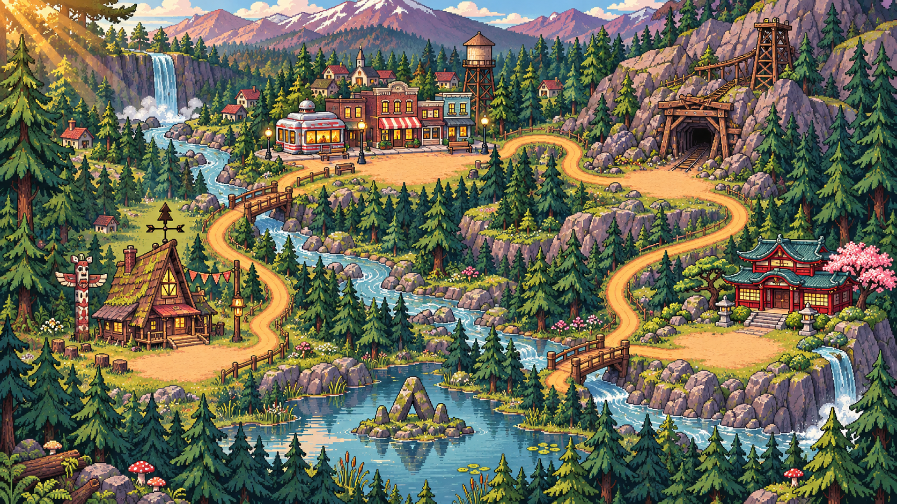

INSERT COIN? JUST PLAY.VOL. 01 / 2026
СТРАННОЕ ЛЕТО. НОВОЕ ПРИКЛЮЧЕНИЕ.
Гравити Фолз. Твой маршрут.
Аркада, подземелья и вестерн-пинбол.
Одно очень странное лето.
DR. KARATE / ДНЕВНОЕ ДОДЗЁ
ДНЕВНИК ПРИКЛЮЧЕНИЯ
Добро пожаловать в Гравити Фолз

Прогресс сохраняется после завершения уровня.
ДИППЕР YOU100
60ROUND 01
100CPU DR. KARATE
АРЕНА ГОТОВИТСЯ
КАК ИГРАТЬ
Вперёд, к тайнам.
Иди вправо, побеждай двойников и собирай страницы.
Пройди уровень, чтобы открыть следующий.
AD/←→
ДвижениеW/↑/SPACE
ПрыжокJРУКАKНОГА
Быстрый удар / сильный ударL/SHIFT
Блок — удерживай